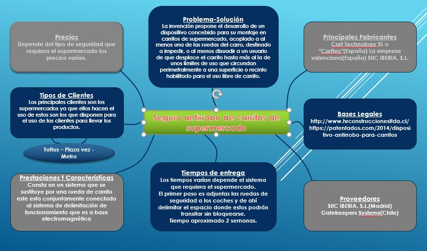

Definir
Una vez realizada la visualizacion de las reacciones del cliente y la empresa frente a este problema que genera perdidas economicas, ahora evaluamos esta informacion con el fin de beneficiar nuestra propuesta.
CRITERIOS PARA EVALUAR LA INFORMACION
Autoridad
Nosotros como grupo estamos dedicado enfocarnos en el problema y evaluarla para así realizas las posibles soluciones que sean entendibles y de fácil adaptación no solo para la empresa sino también para el público.
Relevancia
En el sector comercio de nuestro país ha existido un pequeño problema que viene afectando no solo económicamente a las empresas sino también a sus clientes, si bien la pérdida o robo de carritos de compras en varios establecimientos pasa muy desapercibido; pero luego de realizado una investigación del tema notamos que la suma total de estos elementos de trabajo llega a una gran pérdida económica. Es así que utilizando es información obtenida nosotros trabajamos con los datos más importantes y que ayuden a nuestra propuesta a ser aún más aceptada y necesitada en el mercado; analizando el cómo se organizara los carritos y las cantidades que las empresas necesitan para mejorar esta situación.
Alcance
Ahora veamos a quien estará destinada nuestro proyecto y a quien beneficiará más “¿será de más beneficio a la empresa de ventas o a sus clientes?” Pues nuestro producto beneficia tanto a la tienda de ventas ayudando a mantener un orden en sus carritos lo que hace que no requiera de más personal; también beneficia a sus clientes pues así ellos se sentirán más cómodos de encontrar uno de estos transportes a la puerta o entrada de los establecimientos y no tener que buscarlos o esperar a que sean recogidos desde donde fueron abandonados por los últimos clientes. Pero nuestra propuesta genera un mayor beneficio a los establecimientos de ventas, pues no solo ellos ganan un mayor control de sus herramientas de trabajo sino también ganan dinero con la satisfacción de sus clientes, motivándolos a volver o continuar usando sus servicios.
Exactitud
Revisamos otros proyectos similares al nuestro que fueron implementados en otras regiones del país o inclusive fuera del mismo, y el que más podemos destacar es el de una empresa en España y Chile, donde luego de realizado un análisis en las perdidas de estas herramientas se llegó a la conclusión que se debía dar una solución a este problema que causaba gastos económicos considerables.
Aticulo referido al prblema y las perdidas economicas que genera. RAIZ DEL PROBLEMA EN LOS SUPERMERCADOS
Si bien aún muchas empresas no prestan mucha importancia al problema de orden de los carritos de compras, ocasionando así sus daños, pérdidas o robos. La práctica de robar carritos metálicos de la compra para hacer negocio con ellos trae como consecuencia perdidas económicas en la empresa y un problema de satisfacción de los usuarios que ven cada vez más difícil por der acceder al uso de estos para realizar sus compras de una manera cómoda. Para ello, la cadena de hipermercados ha empezado a implantar en algunos de sus centros españoles unos carros de la compra con un nuevo sistema antirrobo incorporado.
Articulo referido al prblema y las perdidas economicas que genera.ENFOCAR EL PROBLEMA
La insatisfacción en los usuarios de estos establecimientos como, por ejemplo, de que una persona al llegar y estar dentro del supermercado, pero al verse en la necesidad de tomar un carrito para compras mayores, pero estos están ahí botados por los estacionamientos lo cual le impide contar con uno y estar esperando que alguno lo desocupe.

INSIGHT DEL USUARIOS, CLIENTE O CONSUMIDOR
"LA SATISFACCION DE COMPRAR"
Un supermercado que no sea atractivo no solo por sus bajos precios, sino también por el buen orden en que brindan sus servicios. Tenemos que entender cómo se sienten los usuarios de este centro, no solo al entrar a dicho establecimiento y encontrar los bajos precios u ofertas de productos; también veamos en cómo estas personas se sientes antes de entrar y después de salir del local. Una persona se sentirá mucho más cómoda encontrando muy rápido un carrito de súper a su disposición y así no perder mucho tiempo en ingresar, como también este mismo al momento de salir del local no encontrará obstáculos (carritos de compras) abandonados en su camino al dirigirse a su transporte con retorno a casa.